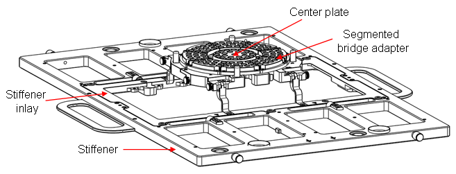
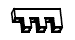
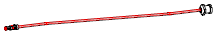
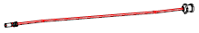

Key components of the high-density RF solution
For complete details refer to drawings N2494-90111 and N2494-90112 (see Stiffener inlay (Handler solutions).
Mechanical parts
The drawing below visualizes the mechanical parts of the segmented RF bridge adapter:

Description |
Part number |
|---|---|
Segmented bridge adapter kit (without inlay) |
|
Center plate |
|
|
|
|
High-density cables and connectors
Description |
|
Part Number |
|---|---|---|
PSRF multiport mini-coax connector (MPMCC), 4 channels, single item |
N2494-67602 |
|
PSRF housing for channel cables, MPMCC, 4 channels, single item |
N2490-61605 |
|
PSRF multiport mini-coax connector (MPMCC), 6 channels, feedthrough, single item |
N2494-67601 |
|
PSRF housing for channel cables, MPMCC, 6 channels, single item |
 |
N2494-65201 |
PSRF DUT cable for MPMCC, straight, 6'' length, male, single item |
 |
N2494-61601 |
PSRF DUT cable for MPMCC, straight, 8'' length, male, single item |
N2494-61603 |
|
PSRF DUT cable for MPMCC, straight, 6'' length, female, single item |
 |
N2494-61602 |
PSRF DUT cable for MPMCC, straight, 8'' length, female, single item |
N2494-61604 |
|
PSRF DUT cable for MPMCC, 90 degree, 6'' length, male, single item |
N2494-61611 |
|
PSRF DUT cable for MPMCC, 90 degree, 8'' length, male, single item |
N2494-61613 |
|
PSRF DUT cable for MPMCC, 90 degree, 6" length, female, single item |
N2494-61612 |
|
PSRF DUT cable for MPMCC, 90 degree, 8" length, female, single item |
N2494-61614 |
For an odd number of channels, please use a connector with the next higher even number of channels and skip the not required connector channel.
For 2- and 8-channel connectors please contact Rosenberger, Germany.
For designs allowing some phase degradation see also Alternative cables for the high-density Port Scale RF solution.
None-dense standard cables and connectors
Description |
Part Number |
|---|---|
PSRF Adapter plate cable, 6", single item |
N2394-61603 |
PSRF Adapter plate cable, 8", single item |
N2394-61604 |
PSRF Adapter plate cable, SMP-SMA, 6", single item |
N2394-61607 |
PSRF Adapter plate cable, SMP-SMA, 8", single item |
N2394-61608 |
PSRF DUT board SMP connector, through or surface, single item |
N2394-67603 |
Functional changes
- Introduced in SmarTest 6.5.3